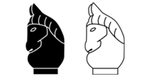

หมากรุกไทย
ม้า

เป็นตัวหมากที่มีวิธีการเดินไม่เหมือนหมากชนิดอื่นใด มี 2 ตัวตอนเริ่มเกม กติกาการเดินม้ามีดังนี้
เดินเฉียงไม่ตรงมุมไป 2 ช่องรอบตัว หรือวิธีจำอีกวิธีคือเดินเป็นรูปตัว L รอบตัวมัน (ตรงไป 2 ช่อง แล้วเลี้ยวซ้ายหรือขวาอีก 1 ช่อง) สามารถกินหมากในช่องที่เดินได้

ตำแหน่งการเดิน
ม้าเป็นหมากชนิดเดียวที่สามารถกระโดดข้ามหมากที่ขวางอยู่ได้

การเดินข้าม
แบบทดสอบ